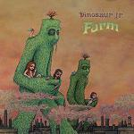
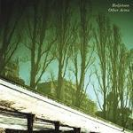
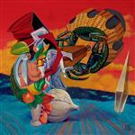

Music Reviews
-

Regina Spektor Far
Regina Spektor's sound expands with production from four big name producers.
Brett Oronzio reviews... -

Manic Street Preachers Journal for Plague Lovers
A cover that's so controversial that supermarkets won't sell it. Deciding to release no singles to promote your album. Sometimes, it's like the last fifteen years never happened as Manic Street Preachers return with their ninth studio album, Journal for Plague Lovers.
Joe Rivers reviews... -
Sunn O))) Monoliths & Dimensions
SunnO)))’s seventh album, Monoliths & Dimensions, presents Stephen O’Malley and Greg Anderson’s sonic murk as something to delve into, their inescapable walls of low-end suddenly beaming with purpose and a million and one instruments.
Sean Caldwell reviews... -
Wilco Wilco (The Album)
(The Album) is Wilco's seventh studio LP in a glittering fifteen year career. To celebrate its release, we asked a handful of No Ripcord scribes to critique the record.
Click here to read more... -

Dinosaur Jr. Farm
Dust down your earplugs: J, Lou and Murph are back with another belter.
Nick Fenn reviews... -

Redjetson Other Arms
The last words of a pretty good band.
Ryan Faughnder reviews... -

Sonic Youth The Eternal
Sonic Youth's sixteenth studio album is a landmark release that sees the band returning to its indie label roots.
To celebrate its release, we're posting a handful of reviews from various members of the No Ripcord team... -

The Mars Volta Octahedron
Another album of masturbatory shit-rock from America's worst prog band.
Nate Adams dances on the corpse's ashes... -
Little Boots Hands
After her sensational 2008 single Stuck On Repeat, I had high hopes for Little Boots' debut album. Does Hands justify the hype?
David Coleman reviews... -

Jarvis Cocker Further Complications
Mr. Disco 2000 takes time out from smoking with Marianne Faithfull to record his second solo album, Further Complications.
Joe Rivers reviews for the Common People...